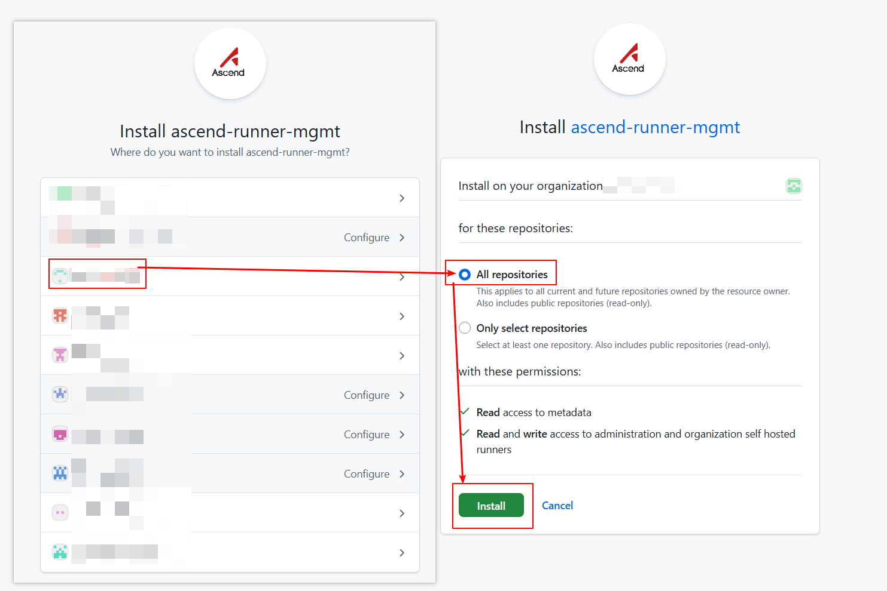
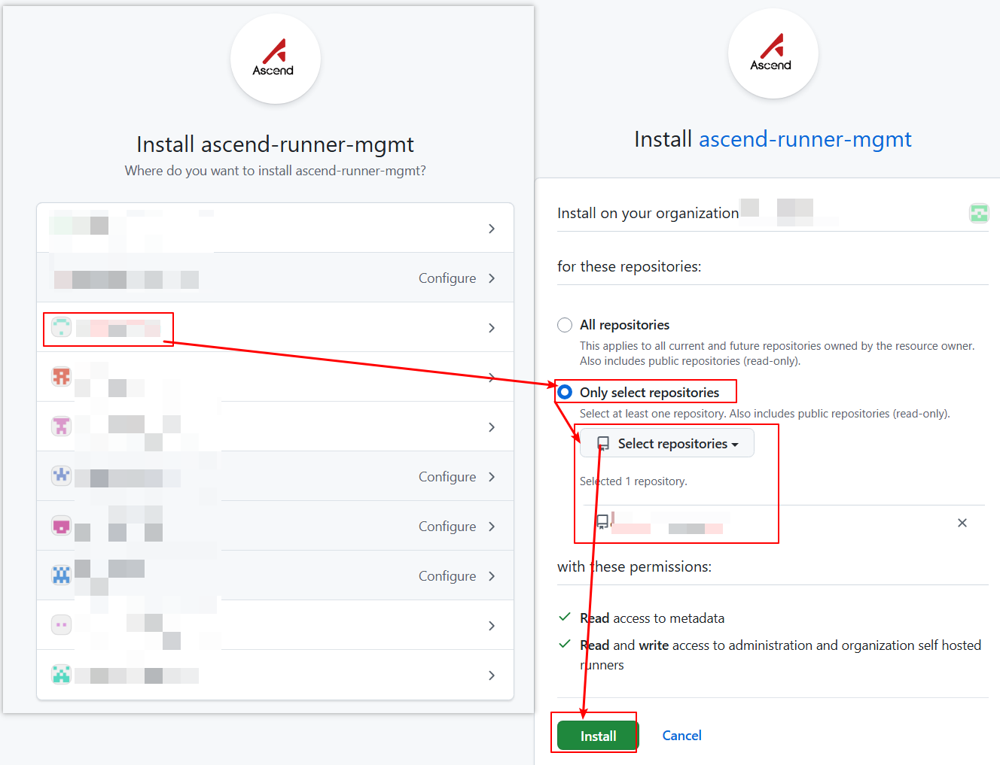
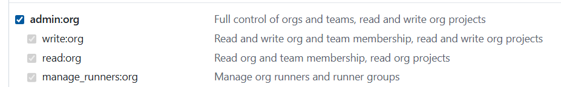
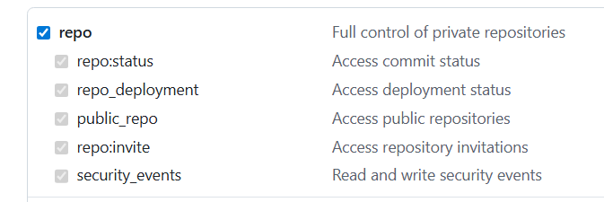
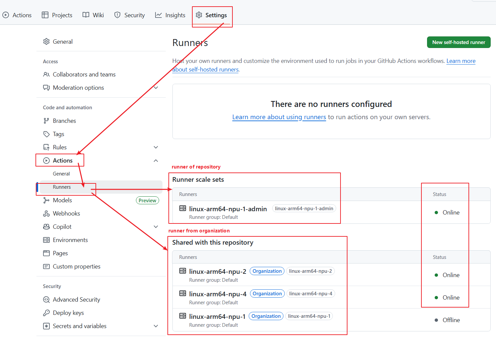

GitHub Actions Integration Guide¶
We implement GitHub Action tasks on Ascend cluster nodes based on ARC.
Runner Pod Types and Naming Methods¶
Ascend clusters create runner pods to execute GitHub Action jobs. We offer the following types of Ascend chips. If no name is specified, the default naming will be applied.
| Type | Architecture | Default name(x = chip count) |
|---|---|---|
| Atlas 300I DUO | arm64 | linux-aarch64-310p-x |
| Atlas 800 A3 | arm64 | linux-aarch64-a3-x |
| Atlas 800 A2 | arm64 | linux-aarch64-a2-x or linux-aarch64-a2b3-x |
Runner Pod Resource Quota¶
CPU and memory quota of each runner pod scales proportionally with the number of NPU chips requested:
| Runner Name | NPU Chips | CPU (cores) | Memory |
|---|---|---|---|
| linux-aarch64-310p-1 | 1 | 11 | 40Gi |
| linux-aarch64-310p-2 | 2 | 22 | 80Gi |
| linux-aarch64-310p-4 | 4 | 44 | 160Gi |
| linux-aarch64-a3-2 | 2 | 39 | 64Gi |
| linux-aarch64-a3-4 | 4 | 78 | 128Gi |
| linux-aarch64-a3-8 | 8 | 156 | 256Gi |
| linux-aarch64-a3-16 | 16 | 312 | 512Gi |
| linux-aarch64-a2-1 | 1 | 23 | 64Gi |
| linux-aarch64-a2-2 | 2 | 46 | 128Gi |
| linux-aarch64-a2-4 | 4 | 92 | 256Gi |
| linux-aarch64-a2-8 | 8 | 184 | 512Gi |
| linux-aarch64-a2b3-1 | 1 | 23 | 64Gi |
| linux-aarch64-a2b3-2 | 2 | 46 | 128Gi |
| linux-aarch64-a2b3-4 | 4 | 92 | 256Gi |
| linux-aarch64-a2b3-8 | 8 | 184 | 512Gi |
Runner Naming Convention¶
The naming convention for runner pod is composed of the following parts:
linux-aarch64-a2-x
^ ^ ^ ^
| | | |
| | | Number of NPUs Available
| | NPU Designator
| Architecture
Operating System
Onboarding Flowchart¶
Start
│
▼
┌───────────────────────────────────────────────────────┐
│ Step 1: Choose Installation Scope and Authentication │
│ You: Determine organization or repository level │
│ You: Choose GitHub App or PAT authentication │
│ Acceptance: Installation plan clarified │
└────────────────────────┬──────────────────────────────┘
│
▼
┌───────────────────────────────────────────────────────┐
│ Step 2: Prepare Permissions │
│ You: Obtain organization or repository admin │
│ Acceptance: Necessary permissions ready │
└────────────────────────┬──────────────────────────────┘
│
├─────────┬─────────┬─────────┐
│ │ │ │
▼ ▼ ▼ ▼
┌────────┐ ┌────────┐ ┌────────┐ ┌────────┐
│Org+App │ │Repo+App│ │Org+PAT │ │Repo+PAT│
└────────┘ └────────┘ └────────┘ └────────┘
│ │ │ │
└─────────┴─────────┴─────────┴─────────┘
│
▼
┌───────────────────────────────────────────────────────┐
│ Step 3: Install GitHub App or Create PAT │
│ You: Execute installation or creation │
│ Acceptance: App installed or PAT generated │
└────────────────────────┬──────────────────────────────┘
│
▼
┌───────────────────────────────────────────────────────┐
│ Step 4: Contact Us for Activation │
│ PAT only: Send email with org/repo and token │
│ GitHub App: We assist directly after installation │
│ Acceptance: Runner deployment confirmed │
└────────────────────────┬──────────────────────────────┘
│
▼
┌───────────────────────────────────────────────────────┐
│ Step 5: Validate Runner Availability │
│ You: Check Runner status in Settings │
│ Acceptance: Runner status shows Online │
└────────────────────────┬──────────────────────────────┘
│
▼
┌───────────────────────────────────────────────────────┐
│ Step 6: Use Runner in Workflow │
│ You: Write workflow and specify Runner label │
│ Acceptance: Workflow runs successfully │
└────────────────────────┬──────────────────────────────┘
│
▼
Integration Complete
Installation¶
We introduce installation methods based on scope (organization/repository) and access permissions (GitHub App/PAT). You can choose one method or combine multiple methods. If installing to organization, runners can be reused across repositories. Runner groups can limit repository scope. If installing to repository, only that repository can use the runner. GitHub App is more secure but requires organization admin permissions. If difficult to obtain organization-level approval, you can choose PAT permissions. If you encounter any issues during installation/usage, please create a discussion.
| Organization | Repository | |
|---|---|---|
| GitHub App | Installation Method | Installation Method |
| PAT | Installation Method | Installation Method |
Install Runner to Organization via GitHub App¶
Prerequisites¶
Requires organization admin permissions.
Optional: Install Runner Group¶
Runners installed at organization level are managed by runner groups. Runner groups have 3 configuration options to control repository workflow access: 1. Repositories: All repositories / Specific repositories 2. Repository access: private / public 3. Workflow: All workflows / Specific workflows Repositories meeting all 3 configurations can use organization runners.
If no runner group specified, default runner group is used with configuration: 1. Repositories: All repositories 2. Repository access: private 3. Workflow: All workflows
You can use and modify default runner group (skip Create New Runner Group). If default runner group is managing runners with different permissions, create custom runner group.
Install GitHub App¶
What you need to do:
Visit apps/ascend-runner-mgmt in browser and click Install.
 Select organization, choose
Select organization, choose All repositories, click Install.

How to verify:
- GitHub App installed to target organization
Activation¶
What we do:
After GitHub App is installed, our team will directly assist with onboarding. No action required from you.
How to verify:
- Runner status shows Online in repository Settings → Actions → Runners
Install Runner to Repository via GitHub App¶
Prerequisites¶
Requires organization and repository admin permissions.
Install GitHub App¶
What you need to do:
Visit apps/ascend-runner-mgmt in browser and click Install.
Select organization, choose Only select repositories, select target repository, click Install.

How to verify:
- GitHub App installed to target repository
Activation¶
What we do:
After GitHub App is installed, our team will directly assist with onboarding. No action required from you.
How to verify:
- Runner status shows Online in repository Settings → Actions → Runners
Install Runner to Organization via PAT¶
Prerequisites¶
Requires organization admin permissions.
Optional: Install Runner Group¶
Create Token¶
What you need to do:
Create token following GitHub Docs.
Select admin:org for scopes.
Note token expiration - after expiration, Runner scale set won't display in repository and workflows cannot execute. Regenerate valid token when expired.

How to verify:
- PAT created and securely saved
Submit Activation Request for Organization¶
What you need to do:
For token security, send email to ascendinfra@huawei.com.
Email subject template: Request Ascend NPU Runners
Email content template:
org: my-org
token: ghp_xxx
expire-at: 30days
What we do:
- Deploy and configure Runner after receiving request
How to verify:
- Email sent and confirmation received
Install Runner to Repository via PAT¶
Prerequisites¶
Requires repository admin permissions.
Create Token¶
What you need to do:
Create token following GitHub Docs.
Select repo for scopes.
Note token expiration - after expiration, Runner scale set won't display in repository and workflows cannot execute. Regenerate valid token when expired.

How to verify:
- PAT created and securely saved
Submit Activation Request for Repository¶
What you need to do:
For token security, send email to ascendinfra@huawei.com.
Email subject template: Request Ascend NPU Runners
Email content template:
repo: https://github.com/my-org/my-repo
token: ghp_xxx
expire-at: 30days
What we do:
- Deploy and configure Runner after receiving request
How to verify:
- Email sent and confirmation received
Usage¶
View Runner¶
What you need to do:
Whether installed to repository or organization, runners are triggered by repository workflows. Navigate to repository → Settings → Actions → Runners.
- Runner scale set: Runners configured for repository
- Shared with this repository: Organization runners accessible to repository
- Status showing Online indicates availability

How to verify Runner availability:
- Runner status shows Online (green dot)
Use NPU Runners in Workflows¶
What you need to do:
To use Ascend chips in job, specify container.image field. Otherwise NPU resources won't be allocated.
Example showing how GitHub Action workflow uses NPU Runners.
name: Test NPU Runner
on:
workflow_dispatch:
jobs:
job_0:
runs-on: linux-aarch64-a2-1
container:
image: ascendai/cann:latest
steps:
- name: Show NPU info
run: |
npu-smi info
How to verify Workflow runs correctly:
- Workflow successfully triggered and running
- Logs show NPU information
FAQ¶
Q1: How do I know if my organization has permission to install GitHub App?
Requires organization Owner permission. If unsure, contact your organization administrator.
Q2: What if Runner status stays Offline?
- Check if GitHub App is correctly installed
- Check if PAT is valid and not expired
- Confirm Runner Group permission configuration
- Contact infrastructure team for troubleshooting
Q3: Workflow keeps waiting for Runner, cannot run?
- Confirm
runs-onfield matches requested Runner name exactly - Check if Runner status is Online
- Confirm repository has access to Runner (Runner Group configuration)
Q4: What to do when PAT expires?
- Regenerate PAT
- Send new Token to infrastructure team via email
- Wait for infrastructure team to update configuration
Q5: How to share Runner across multiple repositories?
- Use organization-level installation (install to organization via GitHub App or PAT)
- Control repository access via Runner Group
Feedback & Support¶
If you encounter any issues during installation/usage, please create a discussion.
When submitting, please provide: - Project name and Git repository URL - Issue description and error information - Installation method used (GitHub App or PAT)